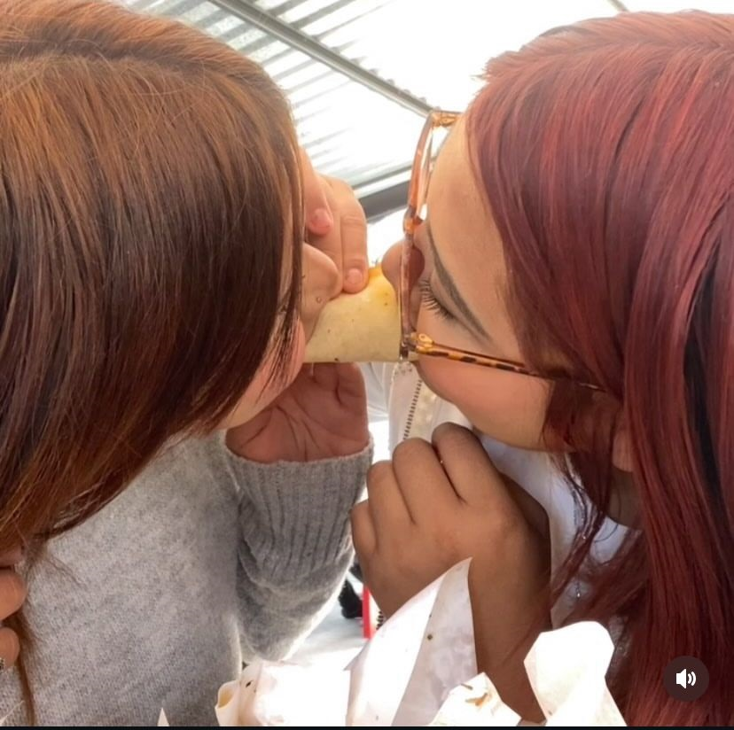

diaz dulce
kitty y sus amigos osea spr increibles los mejores yo y beelen los amamos mas amamos mas a kitty y my melody .
Si pudieran hablar, contarían su historia: desde pequeñas nos gustan y nos siguen gustando corazon coreano son muy kiuts rositas y spr amamos belen es spr kiut parece muñequita asi spr increible su makeup es asi como spr cute la amo mas que a hello kitty y hacer esta pagina nos parecio spr bien y nos gusto muchop aunque por una parte fue muy estresante por que pues se nos complico algunas partes pero fue un gusto trabajar en este proyecto, nuesta pagina se trato sobre una tienda que pues vende cosas de hello kitty para las personas que son muy fans de ella asi como nosotras y pues agrgamos las redes sociales y mas tiendas sobre eso para que haya mas variedad y nos gusti mucho tambien las cosas que encontramos de ella yo en lo personal pues batalle un poco en hacer esto pero al final si quedo y belen pues se le hizo un poco dificil ya que su pagina estaba mal y no sabia que corregir pero pues al final asi quedo esa foto la tomamos en la posada de diciembre y nos dieron tacos asi bien rico 10/10 todo y pues al dia siguiente salimos de vacaciones muy largo fue pero estuvo spr bien y me la pase bien en navidad con mi familia y pues nos fuimos a titulo pero pues pasamos todas belen no por que reprobo aritmetica por que se le hacia muy dificil pero a la segunda ya la pasamospor que esa vez si estudio y ya sabia mas q antes .
En los años 70, una madre desesperada hizo un pacto con el diablo para salvar a su hija que tenía cáncer terminal. Como condición, tuvo que crear un personaje que representara al demonio, y así nació Hello Kitty y fue un gusto colaborar con belen en este proyecto y espero que le vaya bien y que si quede en la utt y que no reprobemos nada por que sino nuestros papas nos regañan y belen ya no quiere reprobar este ultimo semestre para que asi pueda entrar a la uni y cumplir su sueño estudiar gastronomia y pues ella tambien se esforzo mucho haciendo esto y subiendi la pagiuna .